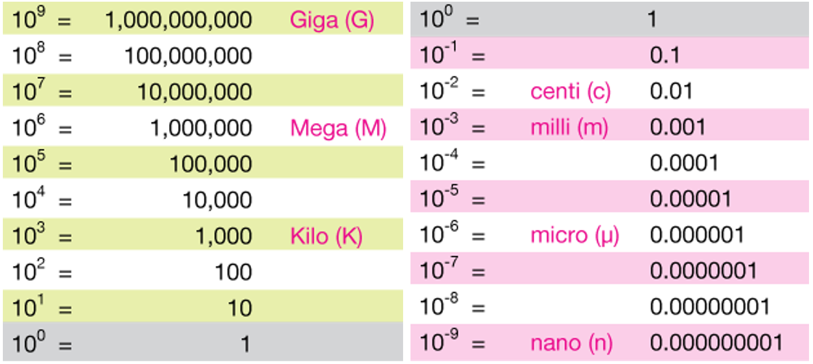

Chart by Jeff Cruzan is licensed under CC BY-NC-SA
3.0
The notation we use to represent large and small numbers depends on
the context of our communications. In a computer script, for example, we
might encode Avogadro’s number as 6.0221*10^23. A computer
printout of this number would typically use E-notation, as in
6.0221E+23.
In professional technical communications, however, computer syntax
should be avoided—the asterisk (*) and carat
(^) in 6.0221*10^23 communicate
instructions to a computer, not syntactical
mathematics. And while scientific E-notation
(6.0221E+23) has currency in some discourse communities,
the general convention in technical communications is to format large
and small numbers using powers-of-ten notation of the form,
\[ a \times 10^n, \]
The \(\times\) multiplication symbol, often avoided in other contexts, is conventional syntax in powers-of-ten notation. Also, the notation has two forms in general use: scientific and engineering (Chase 2021, 63–67).
Scientific. \(n\) is an integer and \(a \in Re: 1\leq{|a|}<10\). For example, \(6.022 \times 10^{23}\)
Engineering. \(n\) is a multiple of 3 and \(a \in Re: 1\leq{|a|}<1000\). For example, \(602.2 \times 10^{21}\)
Exceptions. When exponents are in the neighborhood of zero, for example, \(n \in \{-1, 0, 1, 2\}\), decimal notation may be preferred to power of ten notation. Decimal values such as 0.1234, 1.234, 12.34, and 123.4 might be printed as-is. The range of exponents to include in this set is discretionary.
Notes on syntax. We have to distinguish between computer syntax, math syntax, and markup syntax.
Anyone who has written a line of code involving multiplication is familiar with the asterisk as the multiplication operator, e.g.,
x = a * bory = a * (b + c). In written mathematics, however, these expressions are written without multiplication symbols, that is, \(x=ab\) and \(y=a(b+c)\). Moreover, mathematically the asterisk has a completely different meaning—it represents the convolution operation between two functions, as in \(\left(f * g \right)(t)\).The carat symbol (
^), to the best of my knowledge, is a programming operator only; mathematically it has no meaning.In our markup language,
\timesis the product symbol and^indicates a superscript or exponent.
Markup
In R Markdown and Quarto Markdown, we use an inline equation markup
delimited by $ ... $ to create a math expression in the
output document (\( ... \) is also an option). For example,
the markup for Avogadro’s number is given by,
$6.0221 \times 10^{23}$which yields \(6.0221 \times 10^{23}\) in the document. To program the markup, however, we enclose the markup as a character string, that is,
"$6.0221 \\times 10^{23}$"which requires the backward slash \ to be “escaped”,
hence the product symbol is \\times. This is the form of
the output produced by format_power().
format_power()
Given a number, a numerical vector, or a numerical column from a data
frame, format_power() converts the numbers to character
strings of the form,
"$a \\times 10^{n}$" where a is the coefficient and n is the
exponent. The user can specify the number of significant digits and
scientific or engineering format. Unless otherwise specified, numbers
with exponents in the neighborhood of zero are excluded from power of
ten notation and are converted to character strings of the form,
"$a$" where a is the number in decimal notation to the
specified number of significant digits.
Arguments.
x Numerical vector to be formatted. Can be a scalar, a vector, or a column from a data frame.
digits Positive nonzero integer to specify the number of significant digits. Default is 4.
format Possible values are “engr” (engineering notation) and “sci” (scientific notation). Default is “engr”.
omit_power Numeric vector of length two (or NULL). Determines the range of exponents excluded from power-of-ten notation. Default is
c(-1, 2).set_power Integer assigned as the fixed power-of-ten, overriding scientific or engineering formatting. Default NULL.
delim Character vector of length one or two defining the math markup delimiters. Possible values include
"$"or"\\(", both of which create appropriate left and right delimiters. Custom delimiters can be assigned if required by one’s TeX processor.
If you are writing your own script to follow along, we use these packages in this vignette:
Equivalent usage. The first two arguments do not have to be named if the argument order is maintained.
# Numerical value
avogadro <- 6.0221E+23
# Arguments named
(x <- format_power(x = avogadro, digits = 4))
#> [1] "$602.2 \\times 10^{21}$"
# Arguments unnamed
y <- format_power(avogadro, 4)
# Implicit use of default argument
z <- format_power(avogadro)
# Demonstrate equivalence
all.equal(x, y)
#> [1] TRUE
all.equal(x, z)
#> [1] TRUEScalar
Use with inline R code.
format_power(avogadro)
#> [1] "$602.2 \\times 10^{21}$"which, in an .Rmd or .qmd document, is
rendered as \(602.2 \times
10^{21}\).
Vector
x <- c(
1.2222e-6, 2.3333e-5, 3.4444e-4, 4.1111e-3, 5.2222e-2, 6.3333e-1,
7.4444e+0, 8.1111e+1, 9.2222e+2, 1.3333e+3, 2.4444e+4, 3.1111e+5, 4.2222e+6
)
format_power(x)
#> [1] "$1.222 \\times 10^{-6}$" "$23.33 \\times 10^{-6}$"
#> [3] "$344.4 \\times 10^{-6}$" "$4.111 \\times 10^{-3}$"
#> [5] "$52.22 \\times 10^{-3}$" "$0.6333$"
#> [7] "$7.444$" "$81.11$"
#> [9] "$922.2 \\times 10^{0}$" "$1.333 \\times 10^{3}$"
#> [11] "$24.44 \\times 10^{3}$" "$311.1 \\times 10^{3}$"
#> [13] "$4.222 \\times 10^{6}$"is rendered as \(1.222 \times 10^{-6}\), \(23.33 \times 10^{-6}\), \(344.4 \times 10^{-6}\), \(4.111 \times 10^{-3}\), etc.
Significant digits
Argument does not have to be named.
format_power(x[1], 3)
#> [1] "$1.22 \\times 10^{-6}$"
format_power(x[1], 4)
#> [1] "$1.222 \\times 10^{-6}$"are rendered as
- \(1.22 \times 10^{-6}\)
- \(1.222 \times 10^{-6}\)
Format
format argument default value is “engr”. If included,
argument must be named.
format_power(x[3])
#> [1] "$344.4 \\times 10^{-6}$"
format_power(x[3], format = "sci")
#> [1] "$3.444 \\times 10^{-4}$"are rendered as
- \(344.4 \times 10^{-6}\)
- \(3.444 \times 10^{-4}\)
To compare the effects across many orders of magnitude, we format the
example vector twice, placing the results side by side in a data frame
for comparison, rendered using knitr::kable(),
# Compare two formats
DT <- data.table(
scientific = format_power(x, 3, format = "sci"),
engineering = format_power(x, 3)
)
knitr::kable(DT, align = "r", col.names = c("scientific notation", "engineering notation"))| scientific notation | engineering notation |
|---|---|
| \(1.22 \times 10^{-6}\) | \(1.22 \times 10^{-6}\) |
| \(2.33 \times 10^{-5}\) | \(23.3 \times 10^{-6}\) |
| \(3.44 \times 10^{-4}\) | \(344 \times 10^{-6}\) |
| \(4.11 \times 10^{-3}\) | \(4.11 \times 10^{-3}\) |
| \(5.22 \times 10^{-2}\) | \(52.2 \times 10^{-3}\) |
| \(0.633\) | \(0.633\) |
| \(7.44\) | \(7.44\) |
| \(81.1\) | \(81.1\) |
| \(9.22 \times 10^{2}\) | \(922 \times 10^{0}\) |
| \(1.33 \times 10^{3}\) | \(1.33 \times 10^{3}\) |
| \(2.44 \times 10^{4}\) | \(24.4 \times 10^{3}\) |
| \(3.11 \times 10^{5}\) | \(311 \times 10^{3}\) |
| \(4.22 \times 10^{6}\) | \(4.22 \times 10^{6}\) |
The values displayed without powers-of-ten notation are in the range
set by the omit_power argument, described in the next
section.
Omit power notation
omit_power argument, if included, must be named.
Suppose, for example, we want the value 0.0678 to be rendered without
powers-of-ten notation. The exponent for this number in scientific
notation is \(-2\), as in \(6.780 \times 10^{-2}\). If this exponent is
within the range set by omit_power, the number is rendered
without power-of-ten notation (overriding the format
argument).
format_power(0.0678, 3, format = "sci", omit_power = c(-2, 2))
#> [1] "$0.0678$"
format_power(0.0678, 3, format = "sci", omit_power = c(-1, 2))
#> [1] "$6.78 \\times 10^{-2}$"are rendered as
- \(0.0678\)
- \(6.78 \times 10^{-2}\)
omit_power = NULL removes the exceptions and formats all
numbers in power-of-ten notation.
# Omit no values from power-of-ten notation
DT <- data.table(
scientific = format_power(x, 3, format = "sci", omit_power = NULL),
engineering = format_power(x, 3, omit_power = NULL)
)
knitr::kable(DT, align = "r", col.names = c("scientific notation", "engineering notation"))| scientific notation | engineering notation |
|---|---|
| \(1.22 \times 10^{-6}\) | \(1.22 \times 10^{-6}\) |
| \(2.33 \times 10^{-5}\) | \(23.3 \times 10^{-6}\) |
| \(3.44 \times 10^{-4}\) | \(344 \times 10^{-6}\) |
| \(4.11 \times 10^{-3}\) | \(4.11 \times 10^{-3}\) |
| \(5.22 \times 10^{-2}\) | \(52.2 \times 10^{-3}\) |
| \(6.33 \times 10^{-1}\) | \(633 \times 10^{-3}\) |
| \(7.44 \times 10^{0}\) | \(7.44 \times 10^{0}\) |
| \(8.11 \times 10^{1}\) | \(81.1 \times 10^{0}\) |
| \(9.22 \times 10^{2}\) | \(922 \times 10^{0}\) |
| \(1.33 \times 10^{3}\) | \(1.33 \times 10^{3}\) |
| \(2.44 \times 10^{4}\) | \(24.4 \times 10^{3}\) |
| \(3.11 \times 10^{5}\) | \(311 \times 10^{3}\) |
| \(4.22 \times 10^{6}\) | \(4.22 \times 10^{6}\) |
Set power notation
set_power argument, if included, must be named.
When values in a table column span a few orders of magnitude, an
audience is often better served by setting the notation to a constant
power of ten. In the example below, we show the tabulated values of the
viscosity of water as a function of temperature (from the
water data set included with formatdown).
# Copy to avoid by-reference changes
DT <- copy(water)
# Convert temperature from K to C
DT <- DT[, .(temp = round(temp - 273.15), visc)]
# Create two columns to compare
DT[, ver1 := format_power(visc, 3)]
DT[, ver2 := format_power(visc, 3, set_power = -3)]The first two columns are unformatted. The third column, in engineering format, includes exponents of \(-3\) and \(-6\). In the last column, we set the exponents to \(-3\) throughout.
knitr::kable(DT, align = "r", col.names = c(
"Temperature [C]", "Viscosity [Pa s]", "engineering notation", "with fixed exponent"
))| Temperature [C] | Viscosity [Pa s] | engineering notation | with fixed exponent |
|---|---|---|---|
| 0 | 0.0017336 | \(1.73 \times 10^{-3}\) | \(1.73 \times 10^{-3}\) |
| 10 | 0.0013105 | \(1.31 \times 10^{-3}\) | \(1.31 \times 10^{-3}\) |
| 20 | 0.0010212 | \(1.02 \times 10^{-3}\) | \(1.02 \times 10^{-3}\) |
| 30 | 0.0008174 | \(817 \times 10^{-6}\) | \(0.817 \times 10^{-3}\) |
| 40 | 0.0006699 | \(670 \times 10^{-6}\) | \(0.670 \times 10^{-3}\) |
| 50 | 0.0005605 | \(560 \times 10^{-6}\) | \(0.560 \times 10^{-3}\) |
| 60 | 0.0004776 | \(478 \times 10^{-6}\) | \(0.478 \times 10^{-3}\) |
| 70 | 0.0004135 | \(414 \times 10^{-6}\) | \(0.414 \times 10^{-3}\) |
| 80 | 0.0003631 | \(363 \times 10^{-6}\) | \(0.363 \times 10^{-3}\) |
| 90 | 0.0003229 | \(323 \times 10^{-6}\) | \(0.323 \times 10^{-3}\) |
| 100 | 0.0002902 | \(290 \times 10^{-6}\) | \(0.290 \times 10^{-3}\) |
In the next example, we see that the set_power argument
does not override the omit_power settings
DT <- copy(atmos)
DT <- DT[, .(alt = alt / 1000, dens)]
DT[, ver1 := format_power(dens, 3)]
DT[, ver2 := format_power(dens, 3, set_power = -3)]
DT[, ver3 := format_power(dens, 3, set_power = -3, omit_power = NULL)]
kable(DT, align = "r", col.names = c(
"Altitude [km]",
"Density [kg/m$^3$]",
"engineering notation",
"with fixed exponent",
"omit decimals"
))| Altitude [km] | Density [kg/m\(^3\)] | engineering notation | with fixed exponent | omit decimals |
|---|---|---|---|---|
| 0 | 1.23e+00 | \(1.23\) | \(1.23\) | \(1230 \times 10^{-3}\) |
| 10 | 4.14e-01 | \(0.414\) | \(0.414\) | \(414 \times 10^{-3}\) |
| 20 | 8.89e-02 | \(88.9 \times 10^{-3}\) | \(88.9 \times 10^{-3}\) | \(88.9 \times 10^{-3}\) |
| 30 | 1.84e-02 | \(18.4 \times 10^{-3}\) | \(18.4 \times 10^{-3}\) | \(18.4 \times 10^{-3}\) |
| 40 | 4.00e-03 | \(4.00 \times 10^{-3}\) | \(4.00 \times 10^{-3}\) | \(4.00 \times 10^{-3}\) |
| 50 | 1.03e-03 | \(1.03 \times 10^{-3}\) | \(1.03 \times 10^{-3}\) | \(1.03 \times 10^{-3}\) |
| 60 | 3.10e-04 | \(310 \times 10^{-6}\) | \(0.310 \times 10^{-3}\) | \(0.310 \times 10^{-3}\) |
| 70 | 8.28e-05 | \(82.8 \times 10^{-6}\) | \(0.0828 \times 10^{-3}\) | \(0.0828 \times 10^{-3}\) |
| 80 | 1.85e-05 | \(18.5 \times 10^{-6}\) | \(0.0185 \times 10^{-3}\) | \(0.0185 \times 10^{-3}\) |
Delimiters
delim argument, if included, must be named.
# Equivalent usage
w <- format_power(x[1])
y <- format_power(x[1], delim = "$")
z <- format_power(x[1], delim = c("$", "$"))
all.equal(w, y)
#> [1] TRUE
all.equal(w, z)
#> [1] TRUEall of which render as
- \(1.222 \times 10^{-6}\)
I encountered one instance in which the $ ... $
delimiters did not produce the desired output—using
kableExtra::kbl() to create a table in a .qmd
output document. Switching the delimiters to \\( ... \\)
fixed the problem, per the recommendation of the MathJax consortium
(Cervone, 2018).
format_power(x[1], delim = "\\(")
#> [1] "\\(1.222 \\times 10^{-6}\\)"
format_power(x[1], delim = c("\\(", "\\)"))
#> [1] "\\(1.222 \\times 10^{-6}\\)"are both rendered as
- \(1.222 \times 10^{-6}\)
Data frame
Using air_meas, a data frame included with
formatdown that contains columns of class Date, character,
factor, numeric, and integer.
# Included with formatdown
air_meas
#> date trial humid temp pres sp_gas dens
#> <Date> <char> <fctr> <num> <num> <int> <num>
#> 1: 2018-06-12 a low 294.1 101100 287 1.198
#> 2: 2018-06-13 b high 294.1 101000 287 1.196
#> 3: 2018-06-14 c med 294.6 101100 287 1.196
#> 4: 2018-06-15 d low 293.4 101000 287 1.200
#> 5: 2018-06-16 e high 293.9 101100 287 1.199
# Render in document
knitr::kable(air_meas, align = "r")| date | trial | humid | temp | pres | sp_gas | dens |
|---|---|---|---|---|---|---|
| 2018-06-12 | a | low | 294.1 | 101100 | 287 | 1.198 |
| 2018-06-13 | b | high | 294.1 | 101000 | 287 | 1.196 |
| 2018-06-14 | c | med | 294.6 | 101100 | 287 | 1.196 |
| 2018-06-15 | d | low | 293.4 | 101000 | 287 | 1.200 |
| 2018-06-16 | e | high | 293.9 | 101100 | 287 | 1.199 |
Treating a column as a vector,
# Copy to avoid "by reference" changes to air_meas
DT <- copy(air_meas)
# Format as a vector
format_power(DT$pres, digits = 4)
#> [1] "$101.1 \\times 10^{3}$" "$101.0 \\times 10^{3}$" "$101.1 \\times 10^{3}$"
#> [4] "$101.0 \\times 10^{3}$" "$101.1 \\times 10^{3}$"is rendered as \(101.1 \times 10^{3}\), \(101.0 \times 10^{3}\), \(101.1 \times 10^{3}\), \(101.0 \times 10^{3}\), \(101.1 \times 10^{3}\).
Treating a column within a data frame,
# Copy to avoid "by reference" changes to air_meas
DT <- copy(air_meas)
# Format one column, retain all columns
DT$pres <- format_power(DT$pres, digits = 4)
DT[]
#> date trial humid temp pres sp_gas dens
#> <Date> <char> <fctr> <num> <char> <int> <num>
#> 1: 2018-06-12 a low 294.1 $101.1 \\times 10^{3}$ 287 1.198
#> 2: 2018-06-13 b high 294.1 $101.0 \\times 10^{3}$ 287 1.196
#> 3: 2018-06-14 c med 294.6 $101.1 \\times 10^{3}$ 287 1.196
#> 4: 2018-06-15 d low 293.4 $101.0 \\times 10^{3}$ 287 1.200
#> 5: 2018-06-16 e high 293.9 $101.1 \\times 10^{3}$ 287 1.199
# Render in document
knitr::kable(DT, align = "r")| date | trial | humid | temp | pres | sp_gas | dens |
|---|---|---|---|---|---|---|
| 2018-06-12 | a | low | 294.1 | \(101.1 \times 10^{3}\) | 287 | 1.198 |
| 2018-06-13 | b | high | 294.1 | \(101.0 \times 10^{3}\) | 287 | 1.196 |
| 2018-06-14 | c | med | 294.6 | \(101.1 \times 10^{3}\) | 287 | 1.196 |
| 2018-06-15 | d | low | 293.4 | \(101.0 \times 10^{3}\) | 287 | 1.200 |
| 2018-06-16 | e | high | 293.9 | \(101.1 \times 10^{3}\) | 287 | 1.199 |
Using lapply() to select and treat multiple columns from
a data frame,
# Copy to avoid "by reference" changes to air_meas
DT <- copy(air_meas)
# Identify columns to format
cols_we_want <- c("temp", "pres", "dens")
# Select and format.
DT <- DT[, lapply(.SD, function(x) format_power(x, 4)), .SDcols = cols_we_want]
DT[]
#> temp pres dens
#> <char> <char> <char>
#> 1: $294.1 \\times 10^{0}$ $101.1 \\times 10^{3}$ $1.198$
#> 2: $294.1 \\times 10^{0}$ $101.0 \\times 10^{3}$ $1.196$
#> 3: $294.6 \\times 10^{0}$ $101.1 \\times 10^{3}$ $1.196$
#> 4: $293.4 \\times 10^{0}$ $101.0 \\times 10^{3}$ $1.200$
#> 5: $293.9 \\times 10^{0}$ $101.1 \\times 10^{3}$ $1.199$
# Render in document
knitr::kable(DT, align = "r")| temp | pres | dens |
|---|---|---|
| \(294.1 \times 10^{0}\) | \(101.1 \times 10^{3}\) | \(1.198\) |
| \(294.1 \times 10^{0}\) | \(101.0 \times 10^{3}\) | \(1.196\) |
| \(294.6 \times 10^{0}\) | \(101.1 \times 10^{3}\) | \(1.196\) |
| \(293.4 \times 10^{0}\) | \(101.0 \times 10^{3}\) | \(1.200\) |
| \(293.9 \times 10^{0}\) | \(101.1 \times 10^{3}\) | \(1.199\) |
Repeat, but retain all columns,
# Copy to avoid "by reference" changes to air_meas
DT <- copy(air_meas)
# Identify columns to format
cols_we_want <- c("temp", "pres", "dens")
# Format selected columns, retain all columns
DT <- DT[, (cols_we_want) := lapply(.SD, function(x) format_power(x, 4)), .SDcols = cols_we_want]
DT[]
#> date trial humid temp pres
#> <Date> <char> <fctr> <char> <char>
#> 1: 2018-06-12 a low $294.1 \\times 10^{0}$ $101.1 \\times 10^{3}$
#> 2: 2018-06-13 b high $294.1 \\times 10^{0}$ $101.0 \\times 10^{3}$
#> 3: 2018-06-14 c med $294.6 \\times 10^{0}$ $101.1 \\times 10^{3}$
#> 4: 2018-06-15 d low $293.4 \\times 10^{0}$ $101.0 \\times 10^{3}$
#> 5: 2018-06-16 e high $293.9 \\times 10^{0}$ $101.1 \\times 10^{3}$
#> sp_gas dens
#> <int> <char>
#> 1: 287 $1.198$
#> 2: 287 $1.196$
#> 3: 287 $1.196$
#> 4: 287 $1.200$
#> 5: 287 $1.199$
# Render in document
knitr::kable(DT, align = "r")| date | trial | humid | temp | pres | sp_gas | dens |
|---|---|---|---|---|---|---|
| 2018-06-12 | a | low | \(294.1 \times 10^{0}\) | \(101.1 \times 10^{3}\) | 287 | \(1.198\) |
| 2018-06-13 | b | high | \(294.1 \times 10^{0}\) | \(101.0 \times 10^{3}\) | 287 | \(1.196\) |
| 2018-06-14 | c | med | \(294.6 \times 10^{0}\) | \(101.1 \times 10^{3}\) | 287 | \(1.196\) |
| 2018-06-15 | d | low | \(293.4 \times 10^{0}\) | \(101.0 \times 10^{3}\) | 287 | \(1.200\) |
| 2018-06-16 | e | high | \(293.9 \times 10^{0}\) | \(101.1 \times 10^{3}\) | 287 | \(1.199\) |
References
Davide Cervone (2018) MathJax: TeX and LaTeX math delimiters, https://docs.mathjax.org/en/v2.7-latest/tex.html#tex-and-latex-math-delimiters.
Morgan Chase (2021) Technical Mathematics, https://openoregon.pressbooks.pub/techmath/chapter/module-11-scientific-notation/.